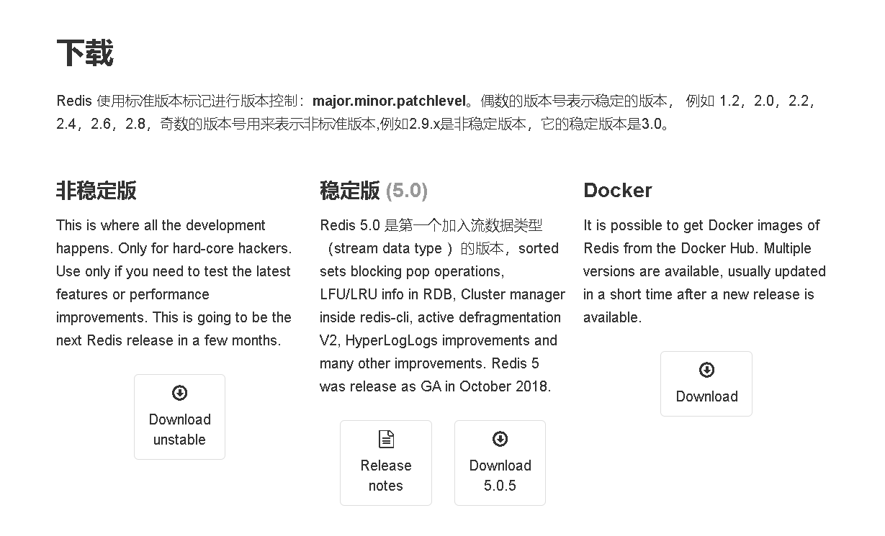
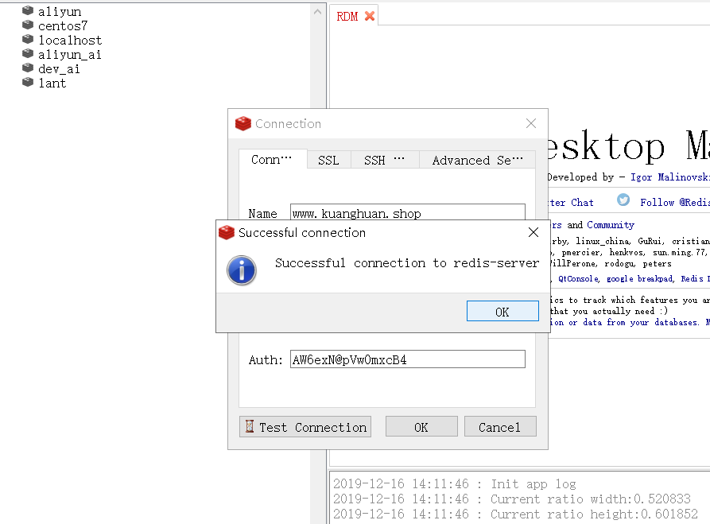

修改hostname
- 修改/etc/hostname文件内容：$ sudo vim /etc/hostname 将里面的内容修改为新的主机名称
- 修改/etc/hosts文件：$ sudo vim /etc/hosts 将127.0.0.1这一行的内容修改为新的主机名称
- 重启
安装 nginx-1.17.0.tar.gz
nginx 的 http 模块使用 pcre 来解析正则表达式，所以需要在 linux 上安装 pcre 库，pcre-devel 是使用 pcre 开发的一个二次开发库
1
yum install -y pcre pcre-devel
zlib 库提供了很多种压缩和解压缩的方式， nginx 使用 zlib 对 http 包的内容进行 gzip ，所以需要在 Centos 上安装 zlib 库
1
yum install -y zlib zlib-devel
如果有需要，根据error提示可能还需要GCC和OpenSSL
1
2yum install gcc-c++
yum install -y openssl openssl-devel开始安装nginx,1.17.0这个是目前最新版本
1
wget -c https://nginx.org/download/nginx-1.17.0.tar.gz
解压并进入nginx目录
1
2tar -zxvf nginx-1.17.0.tar.gz
cd nginx-1.17.0
使用nginx的默认配置
1
./configure
查找安装路径
1
whereis nginx
安装好后，把nginx添加到系统服务中
1
2
3
4
5
6
7
8
9
10
11
12
13
14# 添加nginx.service
# vim /lib/systemd/system/nginx.service
[Unit]
Description=nginx service
After=network.target
[Service]
Type=forking
# 路径对应安装路径
ExecStart=/usr/local/nginx/sbin/nginx
ExecReload=/usr/local/nginx/sbin/nginx -s reload
ExecStop=/usr/local/nginx/sbin/nginx -s quit
PrivateTmp=true
[Install]
WantedBy=multi-user.target添加完成之后即可
1
systemctl enable|status|start|restart|stop nginx.service
Nginx部署前后端分离服务以及配置
在前后端分离端项目里，前端的代码会被打包成为纯静态文件。使用 Nginx的目的就是让静态文件运行起服务，由于后端的接口也是分离的，直接请求可能会产生跨域问题，此时就需要Nginx转发代理后端接口。
1
2
3
4
5
6
7
8
9
10
11
12
13
14
15
16
17
18
19
20
21
22
23
24
25
26
27
28
29
30
31
32
33
34
35
36
37
38
39
40
41
42
43
44
45
46
47
48
49
50
51
52
53
54
55
56
57
58
59
60
61
62
63
64
65
66
67
68
69
70
71
72
73
74
75
76
77
78
79
80user root; #指定 Nginx Worker 进程运行用户以及用户组
worker_processes auto; #启动进程
error_log /var/log/nginx/error.log; #全局错误日志
#error_log logs/error.log notice;
#error_log logs/error.log info;
pid /run/nginx.pid; #PID文件
events {
worker_connections 1024; #单个后台worker process进程的最大并发链接数
}
http {
include mime.types;
default_type application/octet-stream;
gzip on; #开启gzip压缩
gzip_min_length 1k; #设置对数据启用压缩的最少字节数
gzip_buffers 4 16k;
gzip_http_version 1.0;
gzip_comp_level 6; #设置数据的压缩等级,等级为1-9，压缩比从小到大
gzip_types text/plain text/css text/javascript application/json application/javascript application/x-javascript application/xml; #设置需要压缩的数据格式
gzip_vary on;
server {
listen 80; #侦听80端口,并为默认服务,default_server只能有一个
server_name www.kuanghuan.shop; #服务域名,可以有多个,用空格隔开
root /khgo/volume/project/front; ##定义服务器的默认网站根目录位置
error_page 404 /404.html; #将404错误页面重定向到index.html可以解决history模式访问不到页面问题
location / {
root html;
index index.html index.htm;
}
location /storemanager/ {
try_files $uri $uri/ /storemanager/index.html;
}
location /learn/ {
set $cors '';
if ($http_origin ~* 'https?://(localhost(:8090)?|www\.kuanghuan\.shop|kuanghuan\.shop)') {
set $cors 'true';
}
if ($cors = 'true') {
add_header 'Access-Control-Allow-Origin' "$http_origin" always;
add_header 'Access-Control-Allow-Credentials' 'true' always;
add_header 'Access-Control-Allow-Methods' 'GET, POST, PUT, DELETE, OPTIONS' always;
add_header 'Access-Control-Allow-Headers' 'Accept,Authorization,Cache-Control,Content-Type,DNT,If-Modified-Since,Keep-Alive,Origin,User-Agent,X-Mx-ReqToken,X-Requested-With' always;
}
if ($request_method = 'OPTIONS') {
return 204;
}
proxy_set_header X-Forwarded-Host $host;
proxy_set_header X-Forwarded-Server $host;
proxy_set_header X-Forwarded-For $proxy_add_x_forwarded_for;
proxy_pass http://127.0.0.1:8080/learn/;
}
# 图片缓存时间设置
location ~.*.(gif|jpg|jpeg|png|bmp|swf)$ {
expires 10d;
}
# JS和CSS缓存时间设置
location ~.*.(js|css)?$ {
expires 1h;
}
# redirect server error pages to the static page /50x.html
#
error_page 500 502 503 504 /50x.html;
location = /50x.html {
root html;
}
}
}将前端代码打包后的dist文件放入指定服务目录/khgo/volume/project/front/storemanager
- 将服务目录指定到/khgo/volume/project/front目录下即可代理静态服务
- 配置里开启了gzip压缩，可以很大程度上减小文件体积大小
- 将404错误页面重定向到index.html，可以解决前端history路由模式由于刷新页面访问不到服务出现404的问题
- location为代理接口，可以转发代理后端的请求接口域名或者ip，即可解决接口跨域问题
firewalld 防火墙配置
不改变状态下重载防火墙
1
firewall-cmd --reload
基本使用
1
2
3
4
5启动： systemctl start firewalld
关闭： systemctl stop firewalld
查看状态： systemctl status firewalld
开机禁用 ： systemctl disable firewalld
开机启用 ： systemctl enable firewalldsystemctl是CentOS7的服务管理工具中主要的工具，它融合之前service和chkconfig的功能于一体
1
2
3
4
5
6
7
8
9启动一个服务：systemctl start firewalld.service
关闭一个服务：systemctl stop firewalld.service
重启一个服务：systemctl restart firewalld.service
显示一个服务的状态：systemctl status firewalld.service
在开机时启用一个服务：systemctl enable firewalld.service
在开机时禁用一个服务：systemctl disable firewalld.service
查看服务是否开机启动：systemctl is-enabled firewalld.service
查看已启动的服务列表：systemctl list-unit-files|grep enabled
查看启动失败的服务列表：systemctl --failed配置firewalld-cmd
1
2
3
4
5
6
7
8
9
10查看版本： firewall-cmd --version
查看帮助： firewall-cmd --help
显示状态： firewall-cmd --state
查看所有打开的端口： firewall-cmd --zone=public --list-ports
更新防火墙规则： firewall-cmd --reload
查看区域信息: firewall-cmd --get-active-zones
查看指定接口所属区域： firewall-cmd --get-zone-of-interface=eth0
拒绝所有包：firewall-cmd --panic-on
取消拒绝状态： firewall-cmd --panic-off
查看是否拒绝： firewall-cmd --query-panic开启一个端口
1
2
3
4
5
6
7
8添加
firewall-cmd --zone=public --add-port=80/tcp --permanent （--permanent永久生效，没有此参数重启后失效）
重新载入
firewall-cmd --reload
查看
firewall-cmd --zone=public --query-port=80/tcp
删除
firewall-cmd --zone=public --remove-port=80/tcp --permanent
CentOs7.4安装Mysql8.0.17,参考文献
- mysql-8.0.18-1.el7.x86_64.rpm-bundle.tar
卸载Linux自带mariadb什么是mariadb?
1
2
3
4
5
6查看是否存在
rpm -qa | grep mariadb
卸载
rpm -e mariadb-libs-5.5.56-2.el7.x86_64 --nodeps
在查看是否存在
rpm -qa | grep mariadb通过FTP将下载好的mysql-8.0.18-1.el7.x86_64.rpm-bundle.tar传输到/khgo/volume/service
解压MySQL
1
tar -xvf mysql-8.0.17-1.el7.x86_64.rpm-bundle.tar
依此安装所需RPM
1
2
3
4
5
6rpm -ivh mysql-community-common-8.0.17-1.el7.x86_64.rpm --nodeps --force
rpm -ivh mysql-community-libs-8.0.17-1.el7.x86_64.rpm --nodeps --force
rpm -ivh mysql-community-client-8.0.17-1.el7.x86_64.rpm --nodeps --force
rpm -ivh mysql-community-server-8.0.17-1.el7.x86_64.rpm --nodeps --force
查看依赖
rpm -qa | grep mysql
- 依此执行执行初始化命令
1
2
3
4
5
6
7
8
9
10
11
12
13
14$ mysqld --initialize
报错：mysqld: error while loading shared libraries: libaio.so.1: cannot open shared object file: No such file or directory
解决：yum install -y libaio
$ chown mysql:mysql /var/lib/mysql -R
$ systemctl start mysqld.service
报错：Job for mysqld.service failed because the control process exited with error code. See "systemctl status mysqld.service" and "journalctl -xe" for details.
解决：rm -rf /var/lib/mysql
$ systemctl enable mysqld
查看初始Mysql密码
$ cat /var/log/mysqld.log | grep password
结果：2019-12-03T05:54:50.131567Z 5 [Note] [MY-010454] [Server] A temporary password is generated for root@localhost: 0wVr<#prLEow
使用命令登录MySQL
mysql -uroot -p
password: 0wVr<#prLEow
修改MySQL密码，并远程授权
1
2
3
4
5
6
7
8
9
10
11
12ALTER USER 'root'@'localhost' IDENTIFIED WITH mysql_native_password BY 'khgo2019';
失败：ERROR 1819 (HY000): Your password does not satisfy the current policy requirements
原因：密码强度太低
为了安全我们就不修改mysql默认安全策略了(大小写，特殊字符都加上)
ALTER USER 'root'@'localhost' IDENTIFIED WITH mysql_native_password BY 'khGo_2019';
成功！
远程访问Mysql,通过下面命令授权
create user 'root'@'%' identified with mysql_native_password by 'mypassword';
grant all privileges on *.* to 'root'@'%' with grant option;
flush privileges;
exit;
最后使用navicat看是否能连接数据库！
CentOs7.4安装 redis-5.0.5
下载最稳定个版本redis-5.0.5.tar.gz
1
2
3
4$ wget http://download.redis.io/releases/redis-5.0.5.tar.gz
$ tar tar xzf redis-5.0.5.tar.gz
$ cd redis-5.0.5
$ makemake命令结束后，redis-5.0.5目录里面会出现编译后的redis服务程序redis-server,以及测试的客户端程序redis-cli,两个程序都位于src目录下
1
2
3
4
5# 默认启动
$ cd src
$ ./redis-server &
# 携带配置启动
$ ./redis-server ../redis.conf启动服务进程后，可以使用测试客户端redis-cli和redis服务交互
1
2
3
4
5
6$ ./redis-cli
redis> set foo bar
OK
redis> get foo
"bar"
redis> exit设置redis为系统服务
1
2
3
4
5
6
7
8
9
10
11
12
13
14
15#/lib/systemd/system/redis.service
[Unit]
Description=Redis Server
After=network.target
[Service]
Type=forking
PIDFile=/var/run/redis_6379.pid
ExecStart=/khgo/volume/service/redis-5.0.5/src/redis-server /khgo/volume/service/redis-5.0.5/redis.conf
ExecReload=/bin/kill -s HUP $MAINPID
ExecStop=/bin/kill -s QUIT $MAINPID
PrivateTmp=true
[Install]
WantedBy=mutli-user.target重新载入服务
1
2
3
4
5
6
7
8
9
10
11#重新载入 systemctl 并启动服务
systemctl daemon-reload
systemctl start redis.service
#查看状态
systemctl status redis.service
#关闭
systemctl stop redis.service
#开机自启
systemctl enable redis.service
#是否开机自启
systemctl is-enabled redis.service成功！
redis配置
1
2
3
4
5
6
7
8
9
10
11
12
13
14
15
16
17
18
19
20
21
22
23
24
25
26
27
28
29
30# 绑定的主机地址
#bind 127.0.0.1
# 指定Redis监听端口，默认端口为6379,为什么选用6379作为默认端口,因为6379在手机按键上MERZ对应的号码，而MERZ取自意大利歌女Alessia Merz的名字
port 6379
# redis3.2版本后新增protected-mode配置，默认是yes，即开启。设置外部网络连接redis服务
protected-mode no
# 当客户端闲置多长时间后关闭连接，如果指定为0，表示关闭该功能
timeout 300
# Redis默认不是以守护进程的方式运行，可以通过该配置项修改，使用yes启用守护进程
daemonize yes
# 当运行多个 redis 服务时，需要指定不同的 pid 文件和端口
pidfile /var/run/redis_6379.pid
# 指定日志记录级别，Redis总共支持四个级别：debug、verbose、notice、warning，默认为verbose
loglevel notice
# 设置数据库的数量，默认数据库为0，可以使用SELECT <dbid>命令在连接上指定数据库id
databases 16
# 设置Redis连接密码，如果配置了连接密码，客户端在连接Redis时需要通过AUTH <password>命令提供密码，默认关闭
requirepass AW6exN@pVw0mxcB4
# 设置同一时间最大客户端连接数，默认无限制，Redis可以同时打开的客户端连接数为Redis进程可以打开的最大文件描述符数，
# 如果设置 maxclients 0，表示不作限制。当客户端连接数到达限制时，Redis会关闭新的连接并向客户端
# 返回max number of clients reached错误信息
maxclients 128
# 指定Redis最大内存限制，Redis在启动时会把数据加载到内存中，达到最大内存后，Redis会先尝试清除已到期或即将到期的Key，
# 当此方法处理 后，仍然到达最大内存设置，将无法再进行写入操作，但仍然可以进行读取操作。Redis新的vm机制，会把Key存放内存，
# Value会存放在swap区
# 一般推荐Redis设置内存为最大物理内存的四分之三
maxmemory 751619276
# 指定是否在每次更新操作后进行日志记录，Redis在默认情况下是异步的把数据写入磁盘，如果不开启，可能会在断电时导致一段时间内的数据丢失。
# 因为 redis本身同步数据文件是按上面save条件来同步的，所以有的数据会在一段时间内只存在于内存中。默认为no
appendonly no